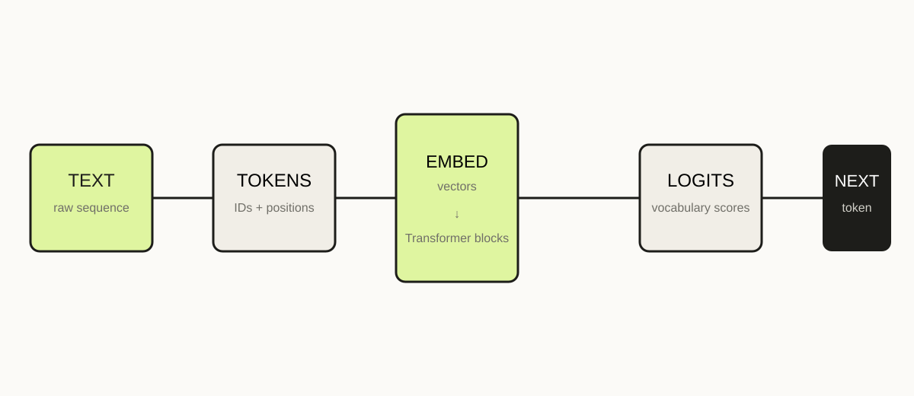

LLM FROM SCRATCH · 01 · ROADMAP · 18 MIN READ
Build an LLM from scratch. Start by understanding the whole machine.
You do not need a giant GPU cluster to learn how a language model works. You need a small model, a tiny dataset, and a willingness to inspect every tensor.

What are we actually building?
For this series, “LLM” means a decoder-only autoregressive language model in the GPT family. It reads a sequence of tokens and produces a probability distribution for the next token. We will build a deliberately small version: tokenizer, embeddings, causal self-attention, multi-head attention, feed-forward networks, normalization, residual connections, training loop, and generation.
The point is not to reproduce the scale of a commercial model. The point is to remove the magic. A tiny model can have the same computational ideas as a much larger one.
The full pipeline
Text becomes token IDs. Token IDs become vectors. Vectors pass through repeated Transformer blocks. The final hidden state is projected into vocabulary-sized logits. Softmax turns logits into probabilities. During training, the model compares its prediction with the true next token and produces a loss. Backpropagation turns that loss into gradients, and an optimizer changes the weights.
text → tokenizer → token ids → embeddings
→ Transformer blocks → logits → next-token probabilities
→ loss → gradients → updated weightsThe ten lessons
- Roadmap: understand the whole system before opening individual files.
- Tokenization: turn strings into the discrete symbols a model can manipulate.
- Embeddings: turn symbols into learned vectors.
- Self-attention: let each position retrieve useful information from earlier positions.
- Multi-head attention: run several learned attention patterns in parallel.
- Transformer block: combine attention, MLPs, residuals and normalization.
- Training: use next-token prediction, cross-entropy, backpropagation and AdamW.
- Data and batching: build efficient training examples and understand context length.
- Generation: sample tokens repeatedly using temperature and top-k/top-p choices.
- From base model to assistant: understand evaluation, instruction tuning and the limits of a tiny GPT.
A useful mental model
Think of the model as a very large function with adjustable parameters. The parameters are not a database of sentences. They are numbers that transform token representations. Training repeatedly asks: “Given this context, how should these numbers change so the correct next token becomes more likely?”
Before continuing, you should be able to explain the difference between a token, an embedding, a hidden state, a logit, a probability and a parameter. If those words are still fuzzy, keep this page open as your map.
The codebase we are aiming for
tiny_gpt/
tokenizer.py
data.py
attention.py
transformer.py
model.py
train.py
generate.pyKeeping components separate is not just tidy engineering. It gives you places to experiment. Change the tokenizer without touching attention. Change the number of heads without rewriting the training loop. Measure what changes.
What “from scratch” means here
We will use PyTorch for tensors, automatic differentiation and GPU execution. We will not call a prebuilt language-model class to hide the architecture. That distinction matters: a framework is a calculator; the educational goal is to understand the calculation.
Next
The first real interface between language and mathematics is tokenization. Before attention can compare anything, the model needs discrete IDs.